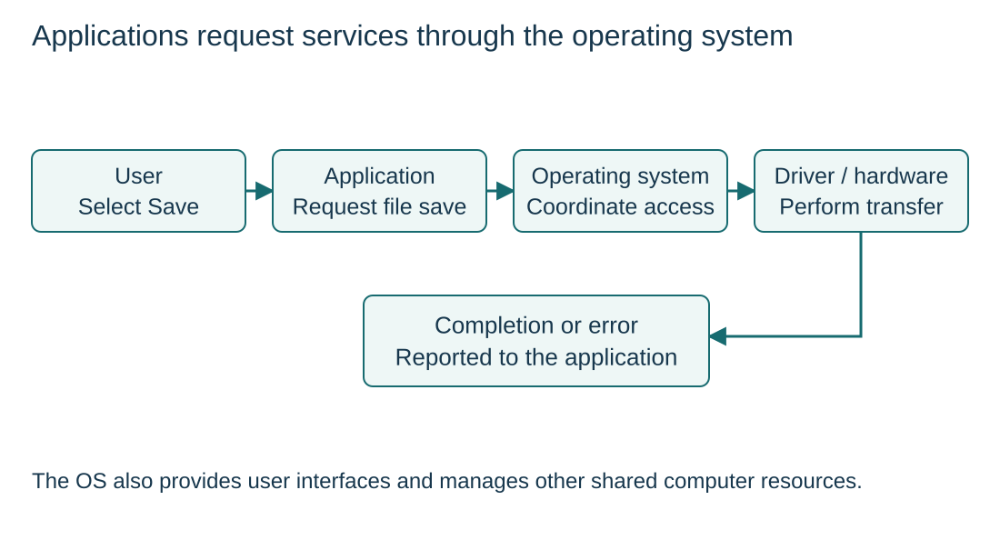

Why an operating system is needed
S5.01.A01
Visual overview
Applications request services through the operating system

Visual transcript
- A user chooses Save in an editor; the editor requests a named file operation from the OS.
- The OS checks permission and coordinates a device driver and storage hardware.
- The application supplies editing behaviour; the OS supplies shared resource management and services.
Core explanation
The OS provides shared services
An operating system is system software that manages resources and supplies services to applications. Its graphical or command-line user interface lets users request operations.
A Save request crosses layers
- Application: The editor requests a named file operation; it still owns the task-specific editing behaviour.
- Operating system: Check whether the operation is permitted and coordinate shared storage access.
- Device services: A driver and hardware perform the transfer, so every application need not implement its own storage controller.
A request crosses software layers
- UserSelects Save in an editor.
- ApplicationRequests a named file operation.
- Operating systemChecks the request and coordinates storage access.
- HardwarePerforms the physical transfer.